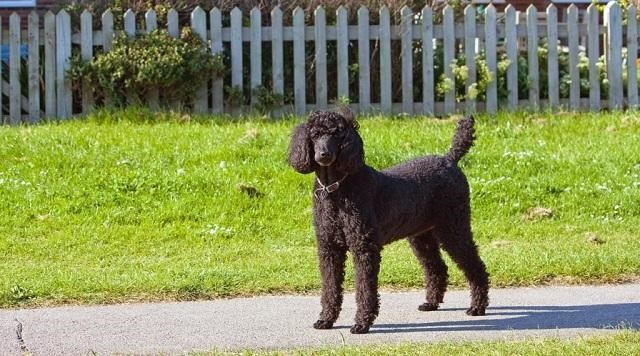
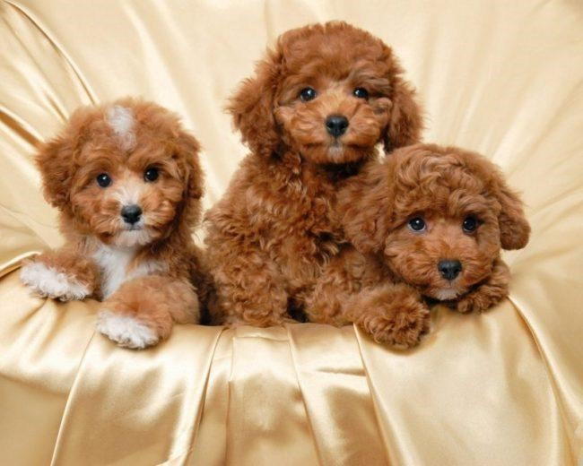

Chó Miniature Poodle

Nguồn gốc của chó Poodle
Chó Poodle hay còn được nhiều người biết đến với tên gọi chó săn
vịt. Poodle cũng được cho là con cháu của 3 giống chó Hungarian Water, French Water Dog và
Barbet. Được biết, chó Poodle đã xuất hiện cách đây ít nhất là 400 năm ở các nước Tây Âu. Tuy
nhiên, nguồn gốc chính xác của loài chó này vẫn là vấn đề gây ra nhiều tranh luận. Người ta vẫn
không thể biết chính xác Poodle có nguồn gốc từ Pháp, Đức hay Đan Mạch. Chỉ biết rằng người Pháp
đã phát hiện ra tư chất thông minh của Poodle. Sau đó, huấn luyện chúng trở thành những diễn
viên xiếc chuyên nghiệp.

Đặc điểm tính cách của chó Poodle
Cũng giống như phần lớn các giống chó khác, Poodle rất trung thành
với chủ nhân. Nếu biết cái dạy dỗ, các bé Poodle sẽ học hỏi và tiếp thu rất nhanh. Bạn nên nhớ
rằng, người Pháp đã từng thuần chủng giống chó này để phục vụ cho các gánh xiếc. Vì thế mà chúng
nó thể thực hiện nhiều động tác khó chỉ sau vài lần huấn luyện. Mặc dù khá thích vận động nhưng
tốt nhất bạn nên cho các bé Poodle hoạt động với cường độ vừa phải thôi. Không nên để các bé
chạy nhảy quá nhiều, dễ gây mất sức.